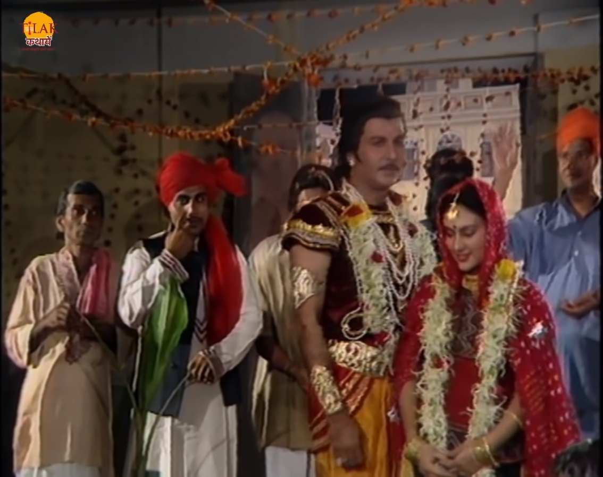
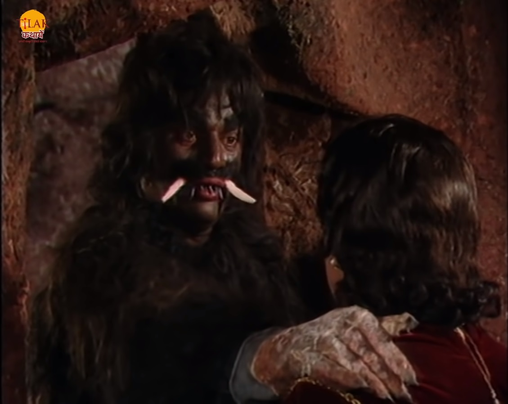
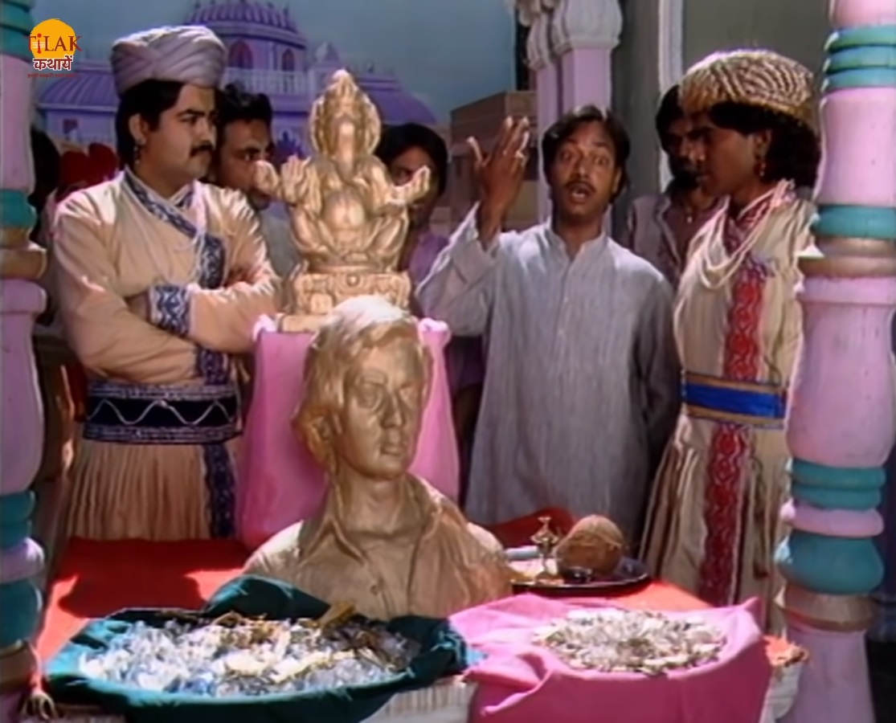
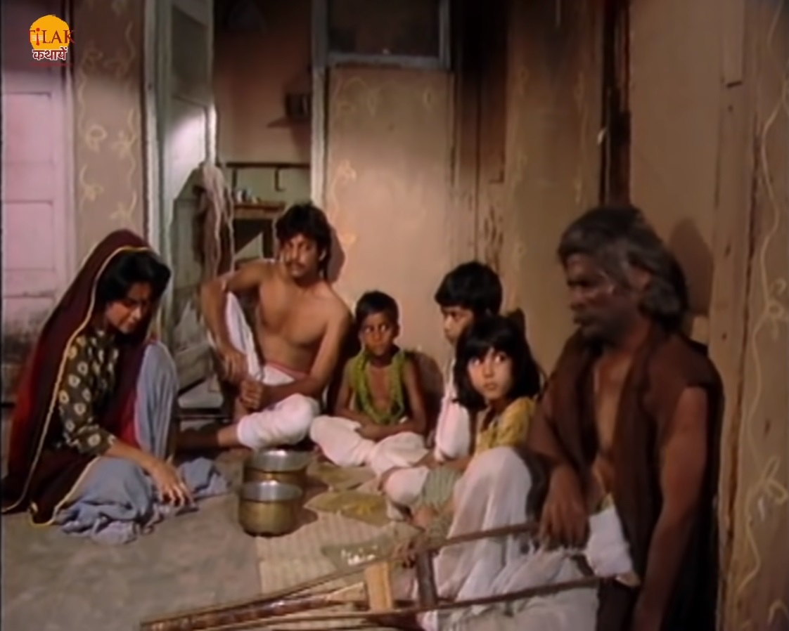
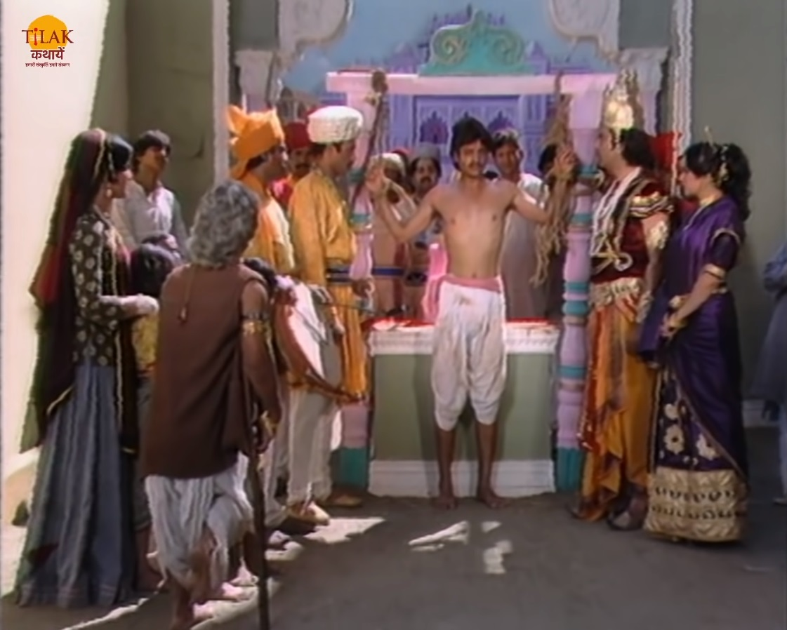
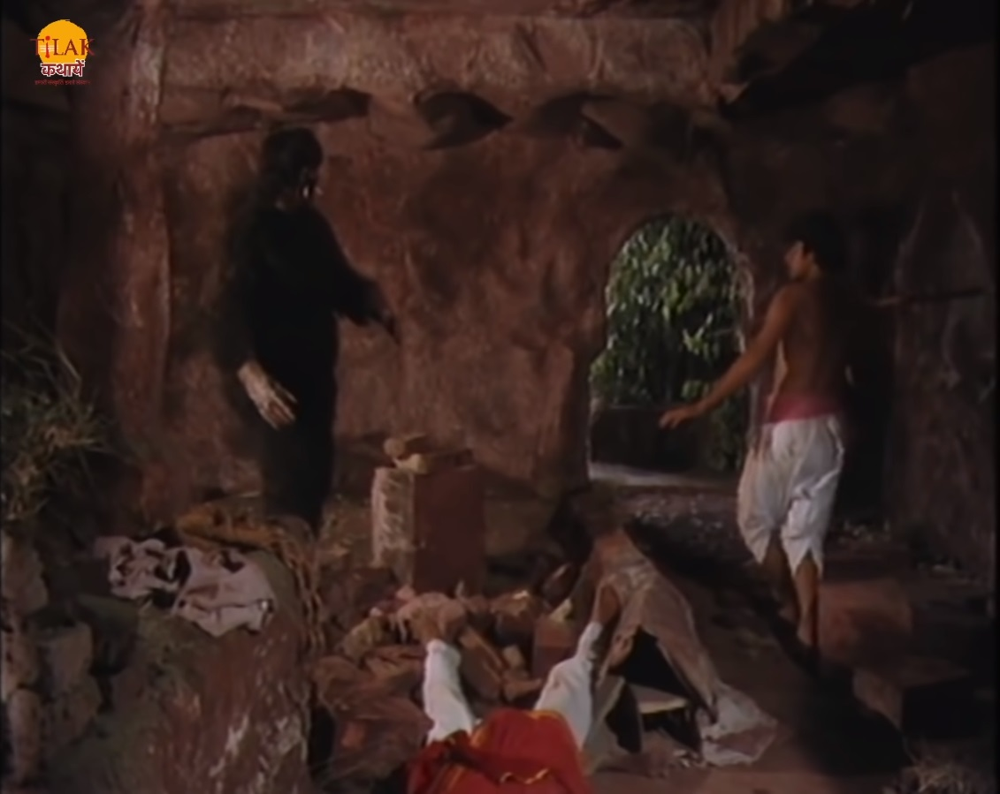

विक्रम और बेताल भाग 13 - बेताल ने सुनाई राजा रुपदत्त और राक्षस की काहनी

बेताल को विक्रम फिर से पकड़ता है और ले चलता है बेताल फिर से उसे एक कहानी सुनता है की चित्रकूट का राजा
रुपदत्त जंगल में गया तो उसे वहाँ एक सुंदर कन्या मिलती है। राजा उसके पिता से उसका हाथ माँग लेता है और उस
से शादी करके अपने साथ चित्रकूट की ओर निकल पड़ता है। रास्ते में दोनों को प्यास लगती है तो वो एक गुफा में
जाते हैं जहां एक रक्षस रहता था वो उन दोनों को पकड़ लेता है और खाने की बात करता है तो राजा उस से
प्रार्थना करता है की वो उन्हें ना मारे। राजा रुपदत्त रक्षस से वादा करता है की वो उसके लिए खाने का प्रबंध
अवश्य करेगा। रक्षस राजा की बात मान लेता है और उसे जाने देता है और कहता है की यादि वो 7 दिन के अंदर उसे
एक आदमी खाने के लिए भेज देता है तो ठीक है अन्यथा वह उसके राज्य में आकर दोनों को खा जाएगा।


र रक्षस के लिए एक आदमी का इंतज़ाम करने की बात सोचते हैं। राजा का मंत्री
उसे कहता है की धन का लालच ही किसी को अपने प्राण देने के लिए मना सकता है तो ताज़ा नगर के चौराहे पर बहुत सारा धन
और सोने का पुतला रखवा देते हैं और सभी को राक्षस वाली बात बताने के लिए कहते हैं की जो भी राक्षस का भोजन बनने के
लिए तैयार होगा वो यह सारा धन रख सकता है। दो दिन बीत जाते हैं लेकिन कोई भी रजा एक धन को स्वीकार नहीं करता है।

राजा के नगर में एक लंगड़ा भिखारी रहता था जो धन को देख कर लालच में आ जाता है और वो अपने घर जाकर अपने
परिवार से कहता है की उनके बुरे दिन टल सकते हैं यादि उनमें से कोई एक अपने प्राण राजा के लिए दे दे तो।
भिखारी का लड़का उसकी बात को माँ लेता है ताकि उसके परिवार के दिन साँवर सके। भिखारी राजा के पास उसे ले
जाता है। राजा उसके धनयवाद करता है और उसके परिवार को वो सारा धन दे देता है। रानी उस युवक को तिलक लगाती
है। वह युवक कुछ देर बाद हंसने लगता है और हंसते हंसते रोने लगता है और फिर चुप हो जाता है और मन ही मन में
सोचता है की वो ऐसे नहीं मारेगा। राजा के सैनिक उसे राक्षस की गुफा में ले जाते हैं। वह युवक गुफा में जाता
है और राक्षस उसे जैसे ही खाने के लिए आता है तो युवक अपने साथ एक सैनिक को भी अंदर खिंच लेता है राक्षस
सैनिक को उठा कर फेंक देता है और युवक की ओर बदता है युवक उस रक्षस को पत्थर मारता है और बेहोश हुए सैनिक का
भला उठा कर राक्षस को मार देता है।


अबे बेताल राजा से पूछता है की वो लड़का रक्षस के पास आने से पहले रोया क्यों और फिर क्यों हंसा। राजा विक्रम बेताल
को बताता है की जिस राजा को मेरी रक्षा करनी चाहिए वो अपने प्राण बचाने के लिए मुझे रक्षस का भोजन बना रहा है और जिस
माँ बाप को उसका पालन पोषण करना चाहिए वो उसे धन के लालच में राजा को सोंप देते हैं वो इन बातों को सोच कर ही पहले
हंसा और फिर रोने लगा। बेताल राजा विक्रम का उत्तर सुनकर खुश हो जाता है और राजा की बुधिमता और न्याय की प्रशंसा
करके वापस से उड़ जाता है और अपने पेड़ पर जाकर लटका जाता है।